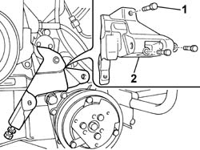

5530A40 ALTERNATOR BRACKETS/MOUNT/SPACER - R R
- Path
- Procedures > 55 ELECTRICAL EQUIPMENT > 5530 CURRENT GENERATOR > 5530A ALTERNATOR AND COMPONENTS > 5530A40 ALTERNATOR BRACKETS/MOUNT/SPACER - R R
- Kind
- repair procedure (removal / refitting; the operation number is the code)
- Applies to
- engines: 2.0 16V; all production periods
- Interactive page
- https://sloeber94.github.io/elrnDB-fDct/en/#/244001361
Applies to: engines: 2.0 16V; all production periods
 Removing
Removing
 Refitting
RefittingOp. 1092B40 AIR CONDITIONER COMPRESSOR/ALTERNATOR DRIVE BELT - R + R
See in Op. 1092G15
See in Op. 1092G20
Op. 5530A14 ALTERNATOR - R+R FOR VERSIONS WITH AIR CONDITIONER
1. Undo the retaining bolts.
2. Remove the alternator mounting.

Applies to: engines: 2.0 16V; all production periods
Refitting
Removing- Fit the alternator mount in its seat.
- Tighten the retaining bolts.
Op. 5530A14 ALTERNATOR - R+R FOR VERSIONS WITH AIR CONDITIONER
See in Op. 1092G20
See in Op. 1092G15
Op. 1092B40 AIR CONDITIONER COMPRESSOR/ALTERNATOR DRIVE BELT - R + R
Topics linked from this page (2)
- 1092B40 AIR CONDITIONER COMPRESSOR/ALTERNATOR DRIVE BELT - R + R
- 5530A14 ALTERNATOR - R+R FOR VERSIONS WITH AIR CONDITIONER